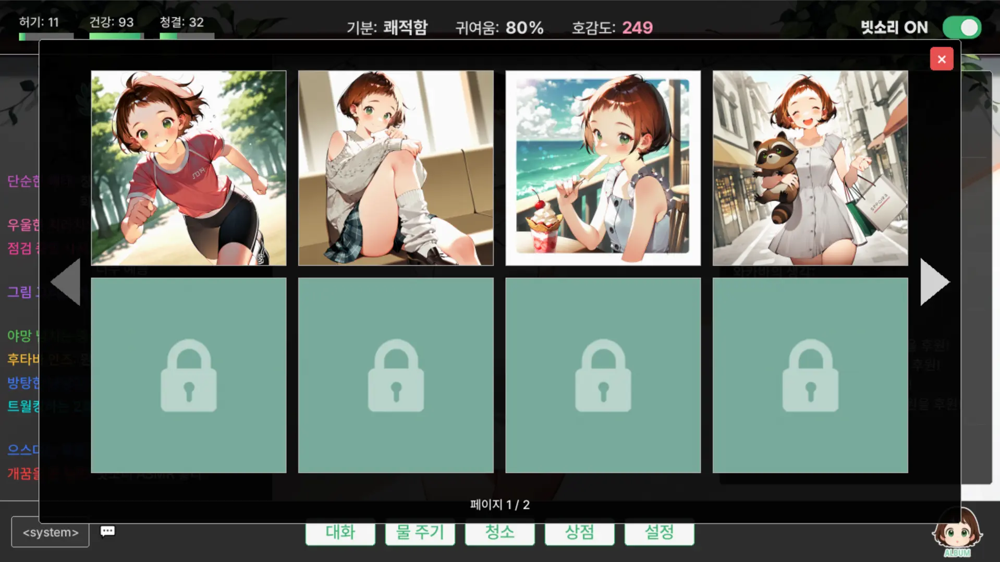
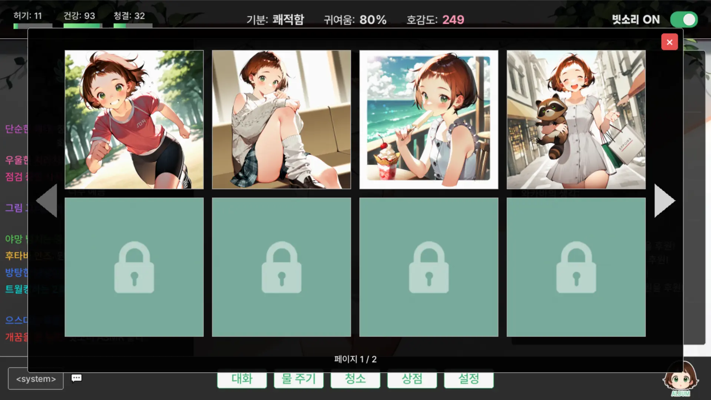

〈Live on! Wakaba〉는 귀엽고 순수한 나무 정령 '이부키 와카바'의 매니저가 되어, 신입 스트리머인 그녀의 성장을 돕는 방치형 캐릭터 육성 시뮬레이션 게임입니다. 와카바의 상태를 관리하고, 대화하며 호감도를 쌓고, 방송 활동을 서포트하며 최고의 스트리머로 키워주세요.
〈Live on! Wakaba〉의 핵심은 힐링과 교감입니다. 물 주기, 청소, 대화 등의 상호작용을 통해 와카바의 상태는 점진적으로 변화하며, 때때로 발생하는 이벤트를 통해 아름다운 고퀄리티 일러스트를 해금할 수 있습니다. 바쁜 일상 속, 당신의 PC에서 와카바와 교감하며 편안한 시간을 경험하세요.
어떻게 개발했을까?
〈Live on! Wakaba〉는 코딩 경험이 전무한 문돌이가 LLM(주로 제미니 2.5)을 활용해 바이브 코딩(!) 형식으로 만든 파이선 기반의 1인 개발 인디 게임입니다. 코딩의 K도 모르는 문과 인간이 LLM을 손에 넣으면 무엇을 만들어낼 수 있을까요? 지금 바로 다운받아서 확인해 보세요.
 
